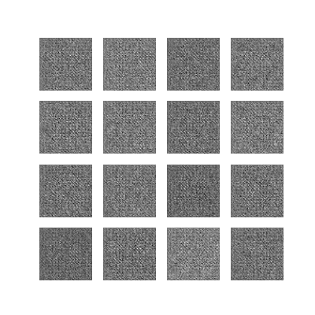

EyeGAN: A dummy messes around with Image Generation
As a beginner in the field of Neural Networks and Deep Learning, I think generating images are the best invention since sliced bread
because of the sheer amount of cool stuff you can make with them. From faces, to handwritten numbers. What more could you ever ask for?
Code is on my GitHub here:
What even is this thing?
Well, its a GAN.
A GAN (or General Adversarial Network) is a way of generating an output based off of 2 neural networks:
- The Generator which spits out random noise and slowly learns to replicate a structure based on feedback.
- The Discriminator which is given a mix of real and fake inputs and tries to pick out which is real.
More specifically, its a DCGAN, which uses Deep Convolutional layers to find and filter specific features in images, making it ideal for creating them too.
During training, the generator progressively becomes better at creating images that look real, while the discriminator becomes better at telling them apart. As the GAN converges,
the 2 neural networks (should) reach an equilibrium when the discriminator can no longer distinguish real images from fake, generated images.
Data
I originally made the GAN able to create handwritten images based off of the MNIST dataset, which is a huge collection of handwritten digits from 0 to 9.
However, after rummaging though the MNIST dataset for a while, I noticed it was just a big 2 dimentional array with values 0 to 255 which represent the pixels of the image.
So, to replicate the MNIST data, I resized a bunch of images of eyes, converted them to grayscale,
and stored that into an array.
After fiddling around the the neural networks to get them to produce 64 by 64 sized images, this is the result!
im=Image.open(filename)
print(f"Loading {filename}")
try:
# Uses Pillow to resize and convert images to grayscale
resize_image = im.resize((image_size, image_size), Image.ANTIALIAS)
gray_image = resize_image.convert("LA")
image_list.append(np.array(gray_image))
except:
print(f"Could not load {filename}") |
 |
 |
. . .
Wait a second. Those don't look like eyes.
Tuning and adjustments
After consulting with people way smarter than I am, there were 2 main problems with my data.
-I only used 87 images (compared to around 60000 from MNIST)
-The model ran for 50 epochs
By increasing the training time to 250 epochs and tripling the dataset to 300 images, I got some way better results
 |
 |
 |  |
Working grayscale generation
Looking back at it, 300 images is nowhere near the amount of images I should've had, but the extra 200 epochs really helped.
This is cool and all but I'm getting board of looking at a bunch of gray squares.
Lets add some color:
Color is usually represented in RGB for displays, which is made of 3 brightness values, representing how much red, blue or green there is in a pixel.
Converting the data into RGB was pretty easy, because all I had to do was to tell the data loader to not grayscale it.
To force the neural networks to use color, I swapped the input of shapes from (n, 64, 64, 1) to (n, 64, 64, 3).
N being the number of images in the dataset, 64 being the width and height of the input, and the last number being the amount of channels:
To make an image from the numbers, I just multiplied the decimal color values by 255. All good, right?
# Paste generated images into a grid and save
i = 0
for y in range(0, 4):
for x in range(0, 4):
img_np = (predictions[i].numpy());
img = Image.fromarray((img_np * 255).astype(np.uint8))
result.paste(img, (y * 64, x * 64))
i += 1
result.save('image_at_epoch_{:04d}.png'.format(epoch)) |
 |
 |
This is definitely not 'right'
I spent 2 entire days messing around in the code and noticed that multiplying the colors by 255 boosted the saturation and brightness way too much.
Apparently, the values I was getting from the generator was from -1 to 1 instead of 0 to 1. With some basic math, I sorted it out.
aaannd. . .
 |
 |
 |
Its ALIVE!
Boom. Full color eyes.
Sure, it could use a little bit of work, say a bit more training time, but you can really start to see the eye part of it.
 |
Result Image
Conclusion
A lot of cool stuff can be generated with GANs. This is nowhere near the state-of-the art tech that researchers are working on, but certainly is interesting to see what a basic set of neural networks can do. More complex models like NVIDIA's StyleGAN2, BigGan, and StyleALAE can generate very high fidelity images that are almost indistinguishable from reality, which is pretty cool considering this was invented in 2014.